Tutorial
This tutorial demonstrates how to install and use the Hybrid Groups Slack app.
Initial setup
Python package
Create a minimal hybrid-groups-tutorial project and install the hybrid-groups package:
Slack app
Install the Hybrid Groups Slack app in a Slack workspace by launching the installation wizard and following the instructions on the screen.
After installation, you should see the following variables in a .env file:
Slack channel
Go to the Slack workspace where you installed the app and create a channel. In the channel's menu, Open channel details -> Integrations -> Add apps, and select the Hybrid Groups app.
API keys
Add a Gemini API key and a Brave Search API key to the .env file:
Adding a BRAVE_API_KEY to .env enables all users to use this key for web search via the Brave Search API. Alternatively, users can add a BRAVE_API_KEY to their secrets in the Slack app's home view, for searching with their personal API keys.
Example agents
Hybrid Groups comes with example agents and a group reasoner defined in the hygroup.factory.example module:
- The group reasoner monitors group chats and decides whether to stay silent or generate a query for the
systemagent. It transforms group chat utterances to agent instructions, depending on criteria and rules defined in its system prompt. - The
systemagent receives instructions from the group reasoner. It is configured with a Brave Search MCP server, a weather forecast tool and can use themathandofficeagents as subagents. - The
mathagent can execute Python code for calculations, data analysis, and visualizations. It is configured with an ipybox MCP server for secure code execution in a sandbox. -
The
officeagent can manage a user's Gmail, Google Calendar, and Google Drive. It uses service connectors to access these services on behalf of individual users. Theofficeagent requires anOPENAI_API_KEYin.envas it usesopenai:gpt-5-minias model.
Using your own agents
To use your own agents and group reasoner, provide their factory module name as argument to the --factory-module command line option when starting the application server. You can also configure channel-specific agents and group reasoners with the --channel-factory-module option.
Application server
Start the Slack application server with:
uv run python -m hygroup.scripts.server \
--gateway slack \
--factory-module hygroup.factory.example
To list the example agents, start typing /hy in the message box of the created Slack channel, select the /hygroup-agents slash command and press Enter:
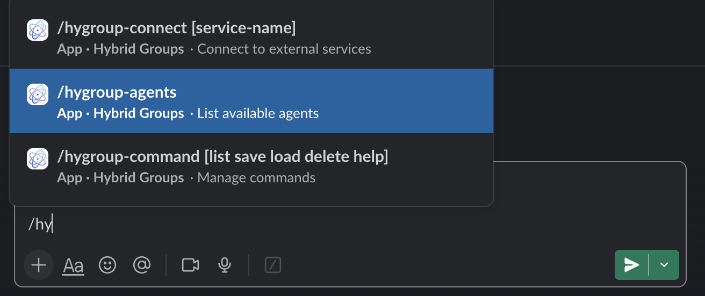
You should see a list of registered agents (except the group reasoner):
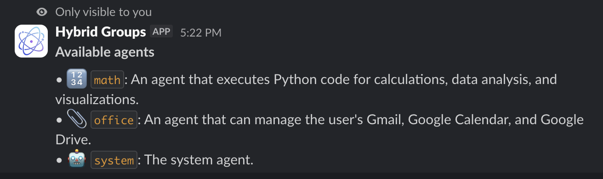
Personal settings
Click on the Hybrid Groups app in Slack, then the Home tab to see your personal settings. These are your preferences (agent response style, ...) and your secrets (API keys, ...). In this example, the user provides his own BRAVE_API_KEY which takes precedence over the default BRAVE_API_KEY in the .env file.
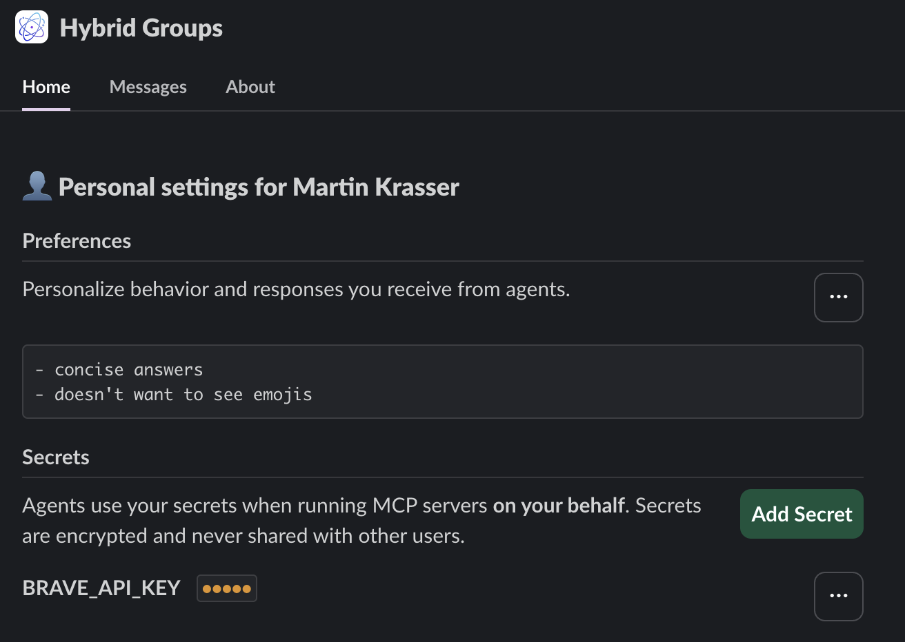
Group sessions
Users and agents collaborate in group sessions, corresponding to threads in Slack. The group reasoner monitors  all messages and decides whether to delegate to the
all messages and decides whether to delegate to the system agent  or stay silent
or stay silent  .
.
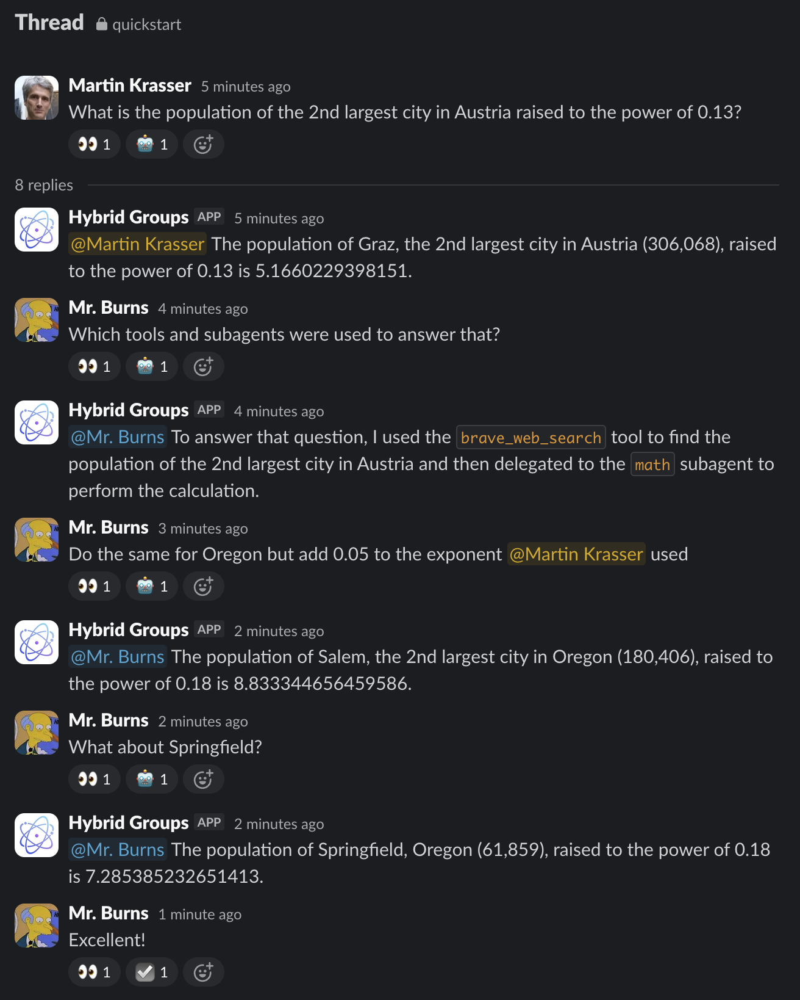
Session persistence
Group messages and agent states are persisted. After an application server restart, group sessions can be resumed. New messages added to Slack threads during an application server downtime are processed when the server is up again.
Service connectors
Composio integration
Hybrid Groups uses Composio to connect to 250+ services, like Gmail, Notion, Figma, etc. Follow these setup instructions for using service connectors.
To enable the office agent to access Gmail on behalf of individual users, they must authorize access to their Gmail accounts by running the /hygroup-connect gmail command in Slack. This needs to be done only once per user.
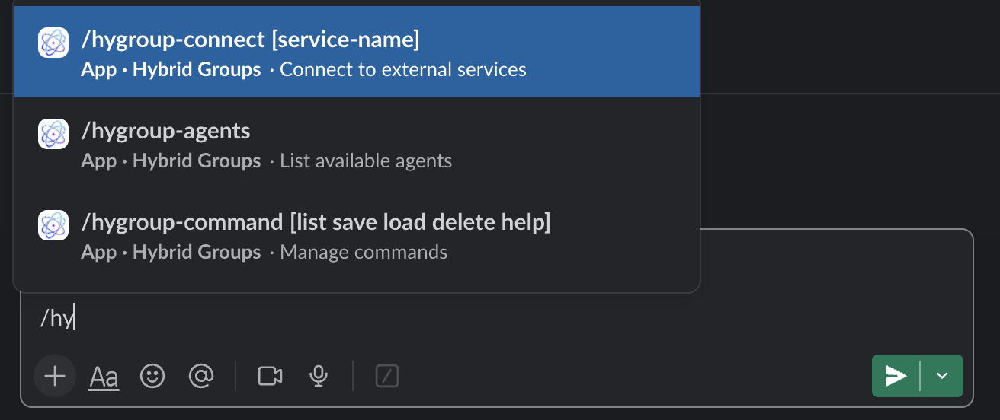
The system responds with a link to initiate the OAuth flow for Gmail:
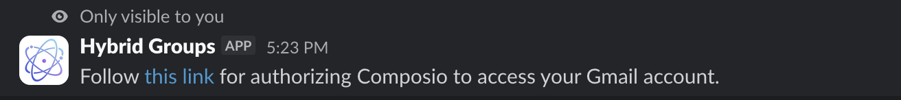
Click on the link and follow the instructions on the OAuth consent screen. After successful authorization, the /hygroup-connect command should show the Composio gmail toolkit as  connected. You are now ready to use your Gmail account via the
connected. You are now ready to use your Gmail account via the office agent.
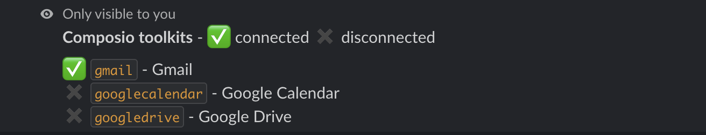
Access restrictions
Users can only access their own Gmail account, never those of other users. Users never have access to service accounts of other users.
In the following example, the system agent uses an office subagent to get email statistics from the inboxes of two users.
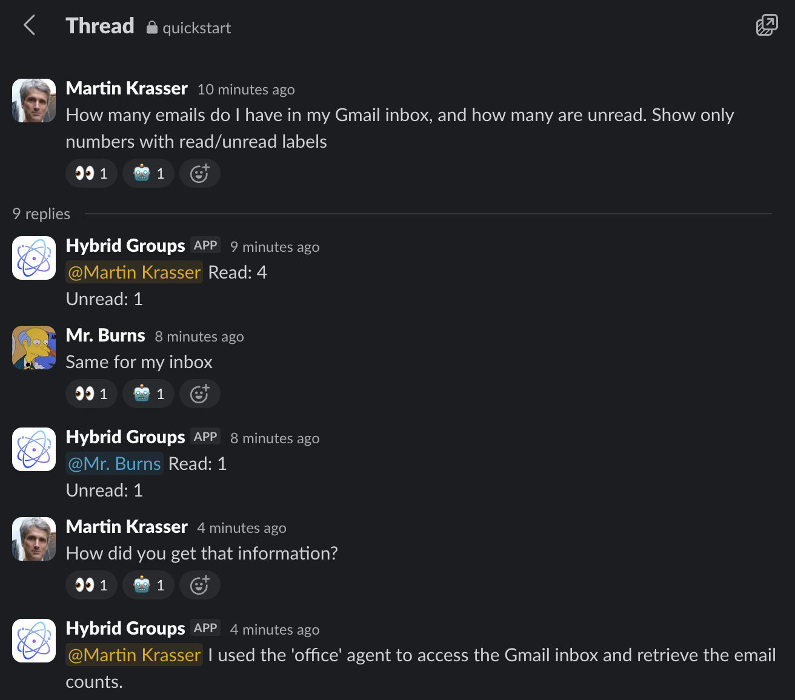
Media attachments
Users can attach media files (images, videos, sound files, ...) and documents (PDFs, ...) to Slack messages for being processed by agents. Attachments are also accessible to subagents.
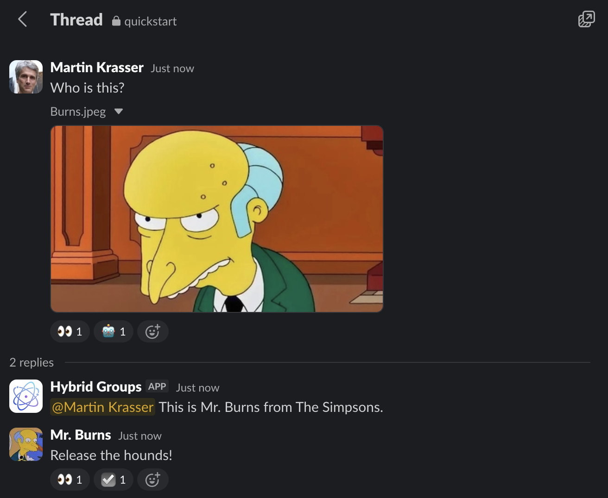
Action approval
Users can be requested to approve actions that are executed on their behalf by starting the application server with the --user-channel slack option:
Approval requests are sent to the initiating user as ephemeral messages, visible only to that user. Users can choose to approve an action once, for the current session, always, or deny execution. Relevant for an action is the tool name only, not the arguments.
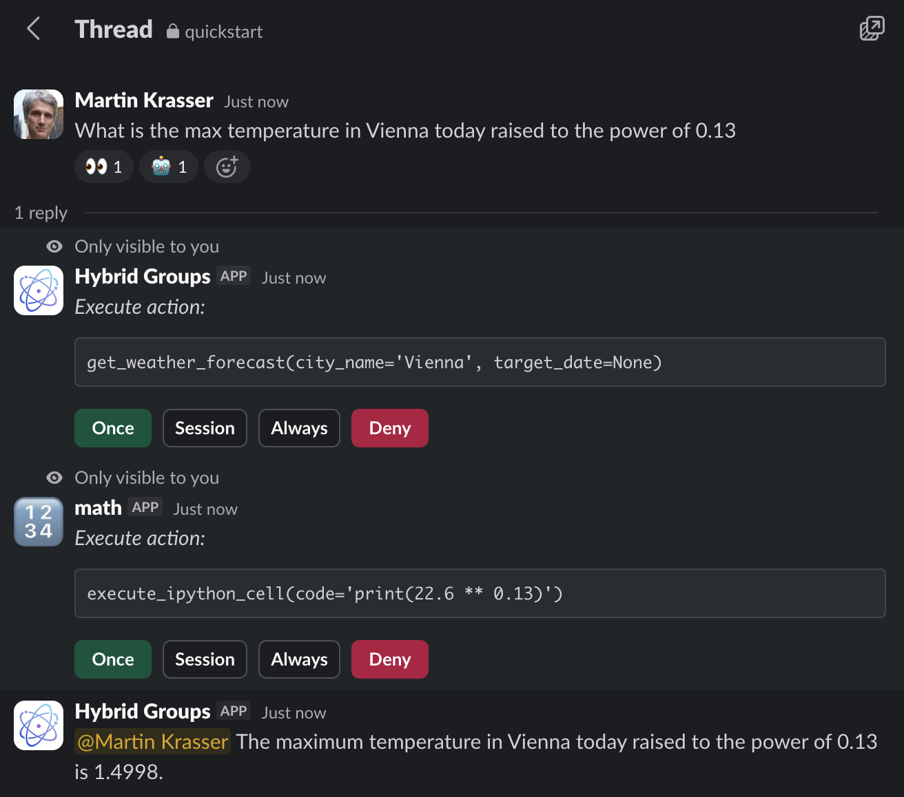
Magic commands
Magic commands are frequently used prompts saved under a custom name. Magic commands are managed with the /hygroup-command slash command in Slack.
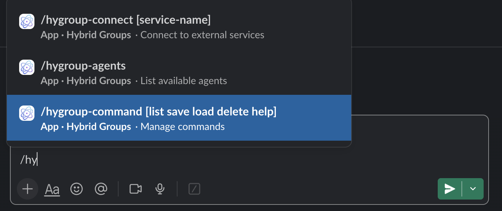
For example, to create and save a weather magic command that gets the weather of the three largest cities of a country, submit the following message:
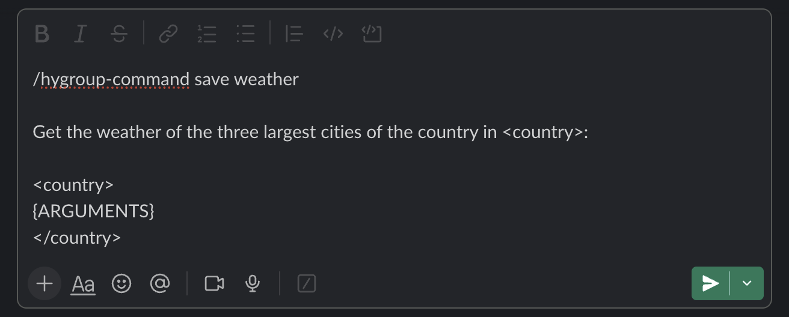
The system saves the magic command for the calling user, and should respond with:
For executing a magic command, start a message with % followed by the command name e.g. %weather. Text following the command substitutes the {ARGUMENTS} variable. If the magic command doesn't contain an {ARGUMENTS} variable, the text is appended.
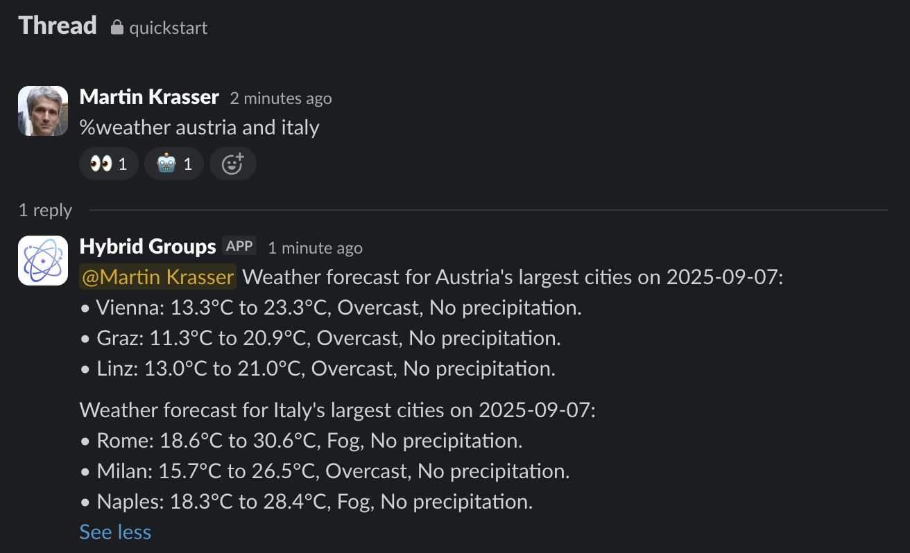
Info
Magic commands in Hybrid Groups are similar to custom slash commands in Claude Code.